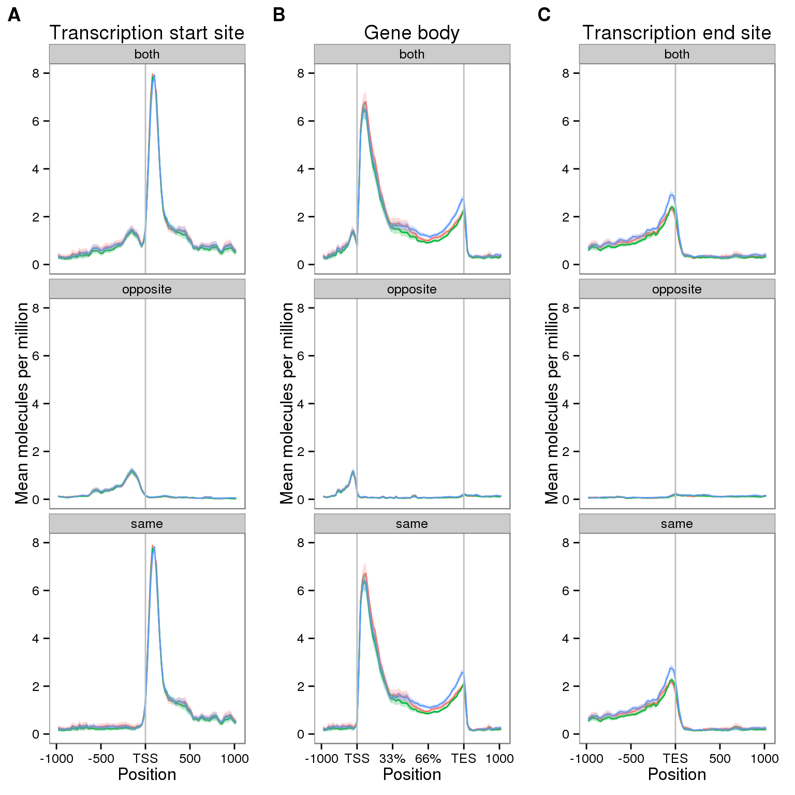
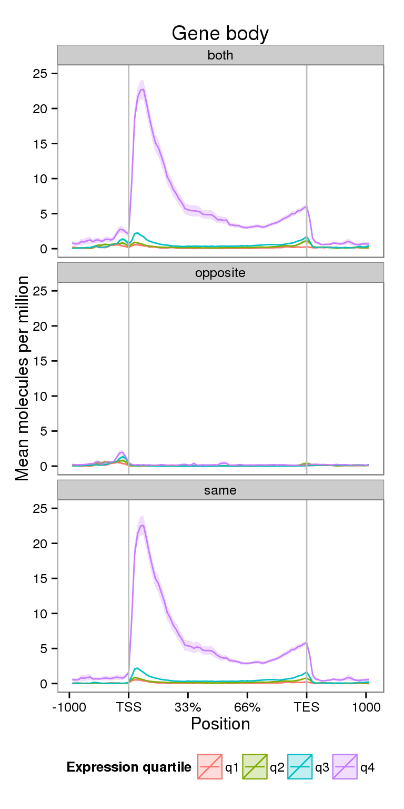
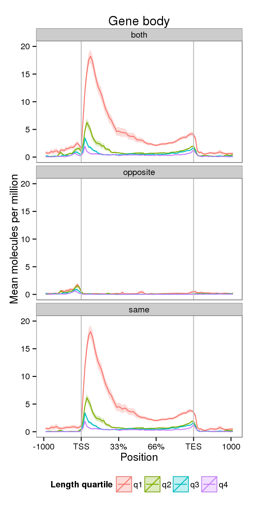

Last updated: 2016-03-15
Code version: 1db9308a307e8e4185c5d233188ba21e5996e560
Here I use ngsplot to calculate coverage.
Conclusions:
library("tidyr")
library("ggplot2")
library("cowplot")
theme_set(theme_bw(base_size = 12))
theme_update(panel.grid.minor.x = element_blank(),
panel.grid.minor.y = element_blank(),
panel.grid.major.x = element_blank(),
panel.grid.major.y = element_blank())The following function aggregate results from the various ngsplot runs.
import_ngsplot <- function(results, id = 1:length(results)) {
# Imports and combines results from multiple ngsplot analyses
#
# results - name of ngsplot results (specified with -O flag)
# id - description of analysis
library("tidyr")
stopifnot(length(results) > 0, length(results) == length(id))
avgprof_list <- list()
sem_list <- list()
for (i in seq_along(results)) {
zipfile <- paste0(results[i], ".zip")
extract_zip(zipfile)
# Import mean coverage
avgprof_list[[i]] <- import_data(path = results[i], datatype = "avgprof",
id = id[i])
# Import standard error of mean coverage
sem_list[[i]] <- import_data(path = results[i], datatype = "sem",
id = id[i])
}
avgprof_df <- do.call(rbind, avgprof_list)
sem_df <- do.call(rbind, sem_list)
final <- merge(avgprof_df, sem_df)
return(final)
}
extract_zip <- function(zipfile) {
# Unzip the ngsplot results into the same directory
stopifnot(length(zipfile) == 1, file.exists(zipfile))
unzip(zipfile, exdir = dirname(zipfile))
return(invisible())
}
import_data <- function(path, datatype, id) {
# Import the data from a specific ngsplot file.
#
# path - path to the ngsplot results directory
# datatype - either "avgprof" for the mean coverage or
# "sem" for the standard error of the mean coverage
# id - description of analysis (length == 1)
stopifnot(datatype == "avgprof" | datatype == "sem",
length(id) == 1)
fname <- paste0(path, "/", datatype, ".txt")
df <- read.delim(fname)
df$position <- paste0("p", 1:nrow(df))
df$id <- id
df_long <- gather_(df, key_col = "metainfo", value = datatype)
df_long$metainfo <- as.character(df_long$metainfo)
df_long$position <- sub("^p", "", df_long$position)
df_long$position <- as.numeric(df_long$position)
return(df_long)
}First I observe the coverage at the TSS, gene body, and TES for all filtered genes.
Unzip and import the raw coverage data.
cov <- import_ngsplot(results = c("../data/ngsplot-molecules-tss-both",
"../data/ngsplot-molecules-genebody-both",
"../data/ngsplot-molecules-tes-both",
"../data/ngsplot-molecules-tss-same",
"../data/ngsplot-molecules-genebody-same",
"../data/ngsplot-molecules-tes-same",
"../data/ngsplot-molecules-tss-opposite",
"../data/ngsplot-molecules-genebody-opposite",
"../data/ngsplot-molecules-tes-opposite"),
id = c("tss-both", "genebody-both", "tes-both",
"tss-same", "genebody-same", "tes-same",
"tss-opposite", "genebody-opposite", "tes-opposite"))Using position, id as id variables
Using position, id as id variables
Using position, id as id variables
Using position, id as id variables
Using position, id as id variables
Using position, id as id variables
Using position, id as id variables
Using position, id as id variables
Using position, id as id variables
Using position, id as id variables
Using position, id as id variables
Using position, id as id variables
Using position, id as id variables
Using position, id as id variables
Using position, id as id variables
Using position, id as id variables
Using position, id as id variables
Using position, id as id variablescov <- separate(cov, "id", into = c("feature", "strand"), sep = "-")
cov$id <- factor(cov$feature, levels = c("tss", "genebody", "tes"))Plotting results.
p <- ggplot(NULL, aes(x = position, y = avgprof, color = metainfo)) +
geom_line()+
geom_ribbon(aes(ymin = avgprof - sem, ymax = avgprof + sem,
color = NULL, fill = metainfo), alpha = 0.25) +
facet_wrap(~strand, ncol = 1) +
theme(legend.position = "none") +
labs(x = "Position", y = "Mean molecules per million") +
ylim(0, 8)TSS
plot_tss <- p %+% cov[cov$feature == "tss", ] +
geom_vline(x = 50, col = "grey") +
scale_x_continuous(breaks = c(0, 25, 50, 75, 100),
labels = c(-1000, -500, "TSS", 500, 1000)) +
labs(title = "Transcription start site")Gene body
plot_genebody <- p %+% cov[cov$feature == "genebody", ] +
geom_vline(x = c(20, 80), color = "grey") +
scale_x_continuous(breaks = c(0, 20, 40, 60, 80, 100),
labels = c(-1000, "TSS", "33%", "66%", "TES", 1000)) +
labs(title = "Gene body")TES
plot_tes <- p %+% cov[cov$feature == "tes", ] +
geom_vline(x = 50, color = "grey") +
scale_x_continuous(breaks = c(0, 25, 50, 75, 100),
labels = c(-1000, -500, "TES", 500, 1000)) +
labs(title = "Transcription end site")plot_grid(plot_tss, plot_genebody, plot_tes, ncol = 3, labels = LETTERS[1:3])
Next I compare the coverage for NA19091 for genes split into expression quartiles.
cov_expr <- import_ngsplot(results = c("../data/ngsplot-genebody-expr-both",
"../data/ngsplot-genebody-expr-same",
"../data/ngsplot-genebody-expr-opposite"),
id = c("both", "same", "opposite"))Using position, id as id variables
Using position, id as id variables
Using position, id as id variables
Using position, id as id variables
Using position, id as id variables
Using position, id as id variablescolnames(cov_expr)[colnames(cov_expr) == "id"] <- "strand"plot_expr <- plot_genebody %+% cov_expr +
scale_color_discrete(name = "Expression quartile") +
scale_fill_discrete(name = "Expression quartile") +
theme(legend.position = "bottom") +
ylim(0, 25)Scale for 'y' is already present. Adding another scale for 'y', which will replace the existing scale.plot_expr
Notice the increased y-axis.
Next I compare the coverage for NA19091 for genes split by gene length.
cov_len <- import_ngsplot(results = c("../data/ngsplot-genebody-len-both",
"../data/ngsplot-genebody-len-same",
"../data/ngsplot-genebody-len-opposite"),
id = c("both", "same", "opposite"))Using position, id as id variables
Using position, id as id variables
Using position, id as id variables
Using position, id as id variables
Using position, id as id variables
Using position, id as id variablescolnames(cov_len)[colnames(cov_len) == "id"] <- "strand"plot_len <- plot_genebody %+% cov_len +
scale_color_discrete(name = "Length quartile") +
scale_fill_discrete(name = "Length quartile") +
theme(legend.position = "bottom") +
ylim(0, 20)Scale for 'y' is already present. Adding another scale for 'y', which will replace the existing scale.plot_len
sessionInfo()R version 3.2.0 (2015-04-16)
Platform: x86_64-unknown-linux-gnu (64-bit)
locale:
[1] LC_CTYPE=en_US.UTF-8 LC_NUMERIC=C
[3] LC_TIME=en_US.UTF-8 LC_COLLATE=en_US.UTF-8
[5] LC_MONETARY=en_US.UTF-8 LC_MESSAGES=en_US.UTF-8
[7] LC_PAPER=en_US.UTF-8 LC_NAME=C
[9] LC_ADDRESS=C LC_TELEPHONE=C
[11] LC_MEASUREMENT=en_US.UTF-8 LC_IDENTIFICATION=C
attached base packages:
[1] stats graphics grDevices utils datasets methods base
other attached packages:
[1] cowplot_0.3.1 ggplot2_1.0.1 tidyr_0.2.0 knitr_1.10.5
[5] rmarkdown_0.6.1
loaded via a namespace (and not attached):
[1] Rcpp_0.12.0 magrittr_1.5 MASS_7.3-40 munsell_0.4.2
[5] colorspace_1.2-6 stringr_1.0.0 httr_0.6.1 plyr_1.8.3
[9] tools_3.2.0 grid_3.2.0 gtable_0.1.2 htmltools_0.2.6
[13] yaml_2.1.13 digest_0.6.8 reshape2_1.4.1 formatR_1.2
[17] bitops_1.0-6 RCurl_1.95-4.6 evaluate_0.7 labeling_0.3
[21] stringi_0.4-1 scales_0.2.4 proto_0.3-10